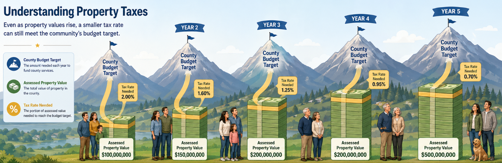

Property Tax Calculator: Reappraisal vs. County Budget
See why your tax bill is not just about your property value. Reappraisal changes how the tax burden is distributed. The county budget determines how much total revenue must be collected.
Plain-language takeaway
Many people think a 50% increase in appraised value means a 50% increase in taxes. That is not necessarily true. If the whole county’s assessed value rises, the tax rate should generally adjust downward under a revenue-neutral certified tax rate. Your bill goes up mainly when the county’s required property tax revenue goes up, or when your property value rises faster than the county average.
“Reappraisal changes the size of the pie slices. The county budget decides how big the pie is.”

Visual example: when countywide assessed values rise, the tax rate needed to fund the budget can still move down.
Your property
Appraised value is an estimate of market value; taxable amount uses the assessment ratio below.
Assessment ratio: Residential/Farm 25%; Commercial/Industrial 40%; Personal property 30%; Public utility 55%.
Countywide tax base & budget
County totals are large numbers. Enter them in millions of dollars of assessed value (for example, 573.476 means about $573.476 million assessed). Defaults use Hickman County prior-year total where noted.
Full amount: —
Full amount: —
If entered, the adjusted revenue-neutral rate uses reappraisal base minus new growth.
Computed from prior county assessed value and prior tax rate unless overridden below.
New budget-required property tax revenue
Scenario sliders
Moving a slider updates the related numbers above so you can explore “what if?” without doing the arithmetic yourself.
Before Reappraisal
Prior appraised market value
—
Assessment ratio
—
Prior assessed value
—
Prior tax rate (per $100)
—
Your estimated bill
—
This is the old bill using the prior value and prior rate.
After Reappraisal — Revenue Neutral
New appraised market value
—
New assessed value
—
Revenue-neutral tax rate
—
Your estimated bill at revenue-neutral rate
—
Difference from prior bill
—
This scenario shows what happens if property values change but the county collects about the same total property tax revenue as last year (revenue-neutral).
After Budget Increase
New appraised market value
—
New assessed value
—
Budget-required tax rate
—
Your estimated bill under new revenue requirement
—
Difference from prior bill
—
This scenario shows the effect of the county budget. If the county needs more revenue, the rate is set to collect that amount from the new tax base.
Why did my bill change?
Where does the property tax rate go?
Your tax bill is not one mysterious number. The total rate is built from separate public funds. This calculator shows how much of your estimated bill goes to general county government, roads/public works, schools, and debt service.
Using Hickman County, Tennessee FY 2025–2026 default rates below.
Fund
Rate per $100
% of total rate
Estimated $ from this property
Explanation
Where the Tax Rate Goes
Fund name
Rate ($ / $100)
Description
Data reference (not legal advice): Hickman County FY 2025–2026 default rate breakdown is based on the county budget rate schedule: General Fund $2.0800, Highway/Public Works $0.0600, General Purpose School $0.5200, General Debt Service $0.0000, total $2.6600 per $100 assessed value. Verify current official rates with Hickman County, the county trustee, the assessor, or the Tennessee Comptroller.
The Tennessee Trustee site lists Hickman County’s 2024 property tax rate as $2.57 per $100 assessed value and 2023 as $2.3324 per $100 assessed value.
Visual comparisons
Estimated Tax Bill Comparison
Tax Rate Comparison
Where the Tax Rate Goes
Same fund shares as in the breakdown above — shown here as a compact comparison chart.